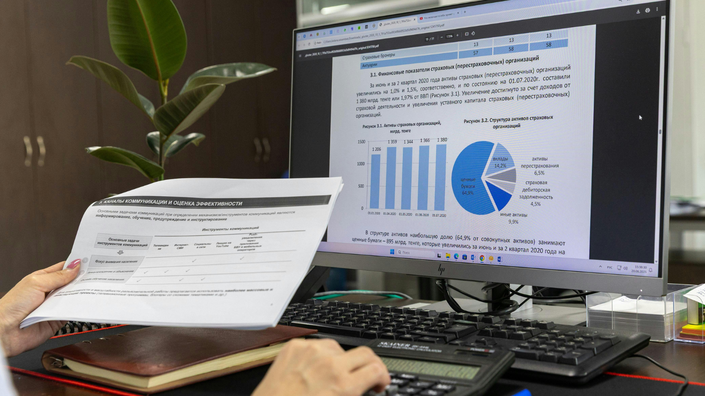

Marketing Grants CRM & Commission Dashboard
Narzędzie w Excelu wspierające ocenę i rozliczanie wniosków o dofinansowanie działań marketingowych, z wykorzystaniem Power Query, VBA i wskaźników efektywności.
WSPARCIE BIZNESU • RAPORTOWANIE • ANALIZA DANYCH
Łączę doświadczenie biznesowe z rozwijanymi kompetencjami analitycznymi, tworząc raporty, dashboardy i projekty wspierające decyzje biznesowe.
Mam ponad 20 lat doświadczenia zawodowego w bankowości, nieruchomościach, doradztwie finansowym oraz wsparciu sieci sprzedaży.
Obecnie rozwijam kompetencje w analizie danych, raportowaniu i wizualizacji. W projektach portfolio wykorzystuję Excel, Power Query, Power BI, DAX, SQL i VBA, pokazując przygotowanie danych, procesy ETL, modelowanie, automatyzację pracy, dashboardy oraz wnioski biznesowe.
Interesuje mnie praktyczne wykorzystanie danych, automatyzacji i AI w biznesie — szczególnie tam, gdzie pomagają usprawniać procesy, porządkować informacje i podejmować lepsze decyzje.
Projekty przygotowane jako praktyczne potwierdzenie rozwijanych kompetencji analitycznych i doświadczenia biznesowego.

Narzędzie w Excelu wspierające ocenę i rozliczanie wniosków o dofinansowanie działań marketingowych, z wykorzystaniem Power Query, VBA i wskaźników efektywności.

Interaktywny raport Power BI pokazujący efektywność programu dofinansowań marketingowych z perspektywy zarządczej. Projekt analizuje przyznane środki, marżę, zwrot z inwestycji, okres zwrotu, wyniki regionów i przedstawicieli oraz ryzyka związane z rozliczeniami.
Studium przypadku SQL obejmujące analizę ponad 829 tys. transakcji fikcyjnej sieci 50 sklepów z zabawkami w Meksyku. Projekt pokazuje kontrolę jakości i przygotowanie danych, analizę sprzedaży, rentowności, trendów, wyników sklepów oraz poziomu zapasów.
Kolejne projekty będą rozwijać portfolio w obszarze analizy danych, raportowania, automatyzacji i wizualizacji wyników biznesowych.
Od bankowości i własnego biznesu do wsparcia biznesu i koordynacji procesów
Odpowiadałam za raportowanie, koordynację procesów wspierających sieć sprzedaży, nadzór nad wykorzystaniem środków finansowych oraz realizację programów marketingowych. Zarządzałam rozproszonym zespołem i współpracowałam z centralą oraz strukturami regionalnymi przy wdrażaniu inicjatyw biznesowych.
Prowadziłam własną działalność gospodarczą, łącząc pośrednictwo nieruchomości z doradztwem finansowym. Odpowiadałam za rozwój firmy, pozyskiwanie klientów, zarządzanie procesami oraz realizację celów biznesowych.
Od analityka kredytowego do kierownika zespołu doradców hipotecznych. Odpowiadałam za analizę dokumentacji finansowej, ocenę ryzyka kredytowego oraz zarządzanie zespołem i jakością procesów.
Wybrane fragmenty referencji z Allianz Polska.
Bernardeta skutecznie wspierała realizację projektów i procesów związanych m.in. z budżetami operacyjnymi regionów oraz budżetami marketingowymi, raportowaniem, przygotowywaniem analiz i zestawień oraz współpracą z rozproszonymi strukturami terenowymi.
W swojej pracy wykazywała się dużą dokładnością, sumiennością oraz umiejętnością pracy z danymi. Potrafiła sprawnie porządkować złożone zagadnienia, przygotowywać raporty i materiały wspierające podejmowanie decyzji biznesowych.
Najlepiej odnajduję się w pracy, w której trzeba zrozumieć proces, uporządkować informacje i przełożyć je na praktyczne rozwiązanie. Lubię widzieć nie tylko same dane, ale też kontekst biznesowy: skąd się biorą, komu są potrzebne i jaką decyzję mają wspierać.
W projektach portfolio łączę analizę danych z raportowaniem, przygotowaniem danych, procesami ETL i automatyzacją pracy. Zależy mi na tym, aby tworzone rozwiązania były czytelne, logiczne i użyteczne dla osób, które na co dzień pracują z danymi lub podejmują decyzje na ich podstawie.
Interesuje mnie również praktyczne wykorzystanie AI w biznesie — szczególnie tam, gdzie może pomagać w porządkowaniu informacji, usprawnianiu pracy i szybszym dochodzeniu do wniosków.
Po godzinach zajmuję się rękodziełem oraz podróżuję motocyklem razem z mężem. Cenię kreatywność, samodzielność i ciągły rozwój — zarówno w życiu zawodowym, jak i prywatnym.
Dane mają wartość wtedy, gdy pomagają lepiej zrozumieć biznes i podjąć dobrą decyzję.
Narzędzia wykorzystywane w projektach portfolio, raportowaniu, przygotowaniu danych i automatyzacji pracy.
Wykształcenie ekonomiczne, informatyka w zarządzaniu i rachunkowość
Studia podyplomowe rozwijające wiedzę z zakresu rachunkowości, finansów, dokumentacji księgowej oraz analizy informacji finansowych.
Studia magisterskie na uczelni ekonomicznej. Specjalizacja: Menedżer w procesie zarządzania. Program łączył wiedzę z obszaru zarządzania, marketingu, ekonomii i organizacji procesów biznesowych.
Studia licencjackie na uczelni ekonomicznej. Specjalizacja: Informatyka w zarządzaniu i marketingu. Program łączył podstawy ekonomii, zarządzania oraz wykorzystania narzędzi informatycznych w biznesie.
Jeśli szukasz osoby, która łączy doświadczenie biznesowe z rozwijanymi kompetencjami analitycznymi, zapraszam do kontaktu.
Napisz do mnie